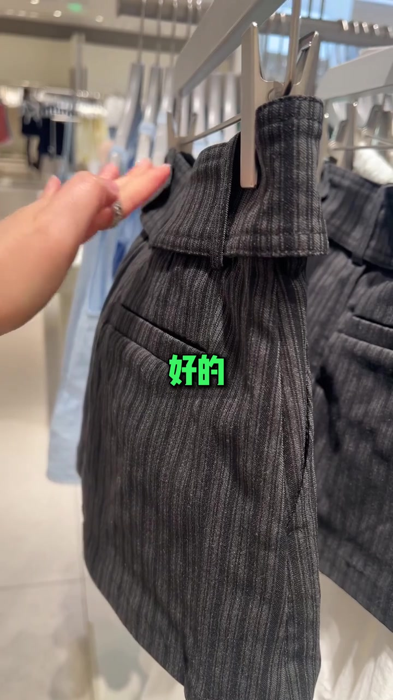
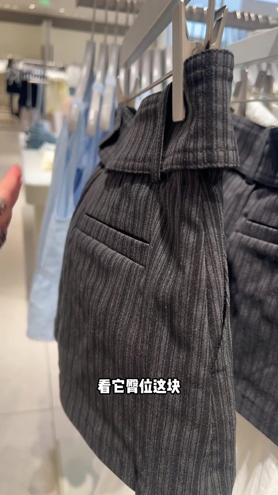
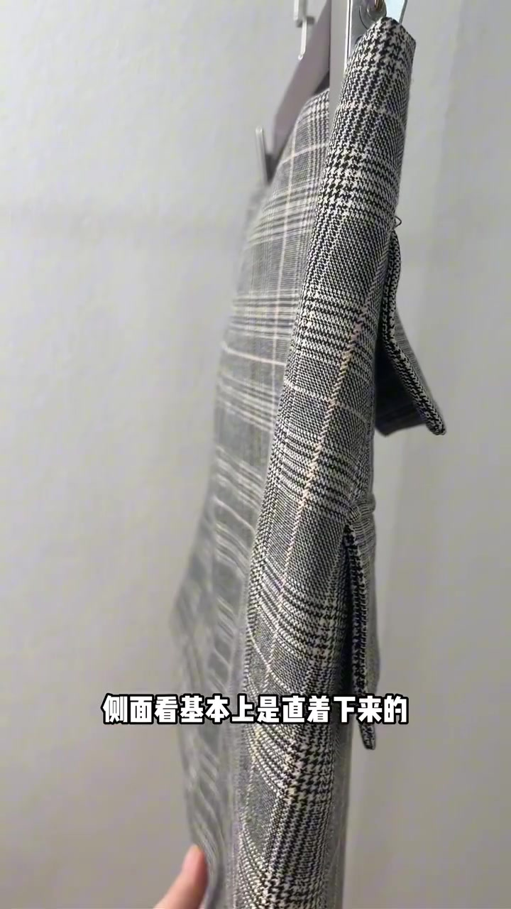
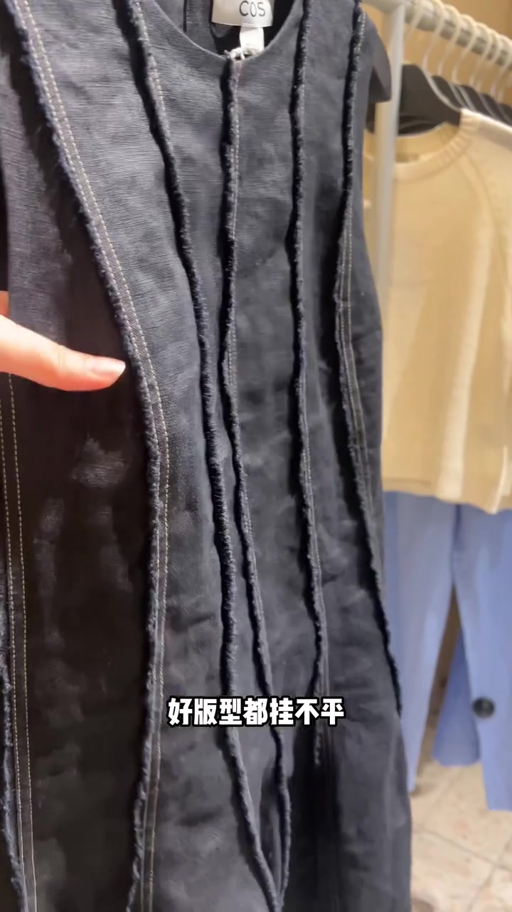
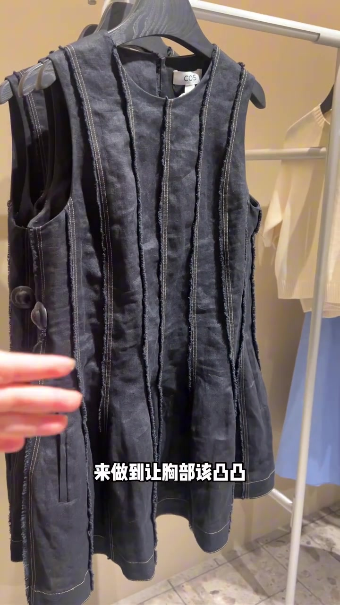
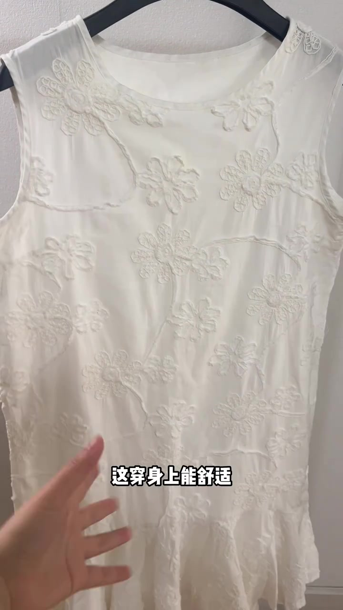
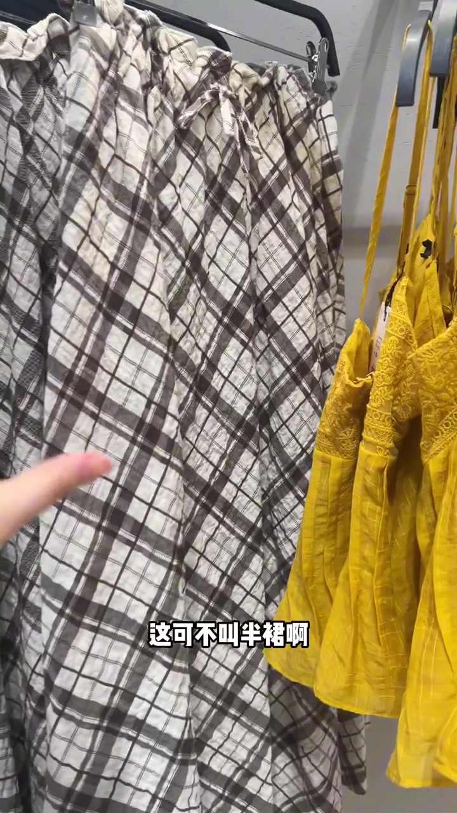
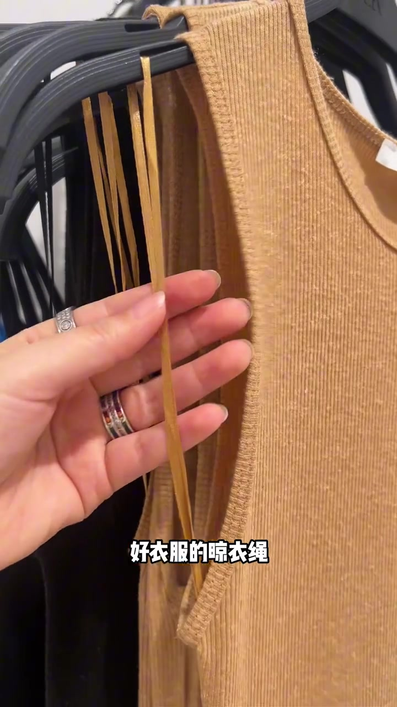

00:00–00:04
开场：差的 / 好的，先把标准钉在货架上
视频不讲品牌故事，直接在店内货架上手指衣物，交替叠出「差的」「好的」大字，告诉观众：衣服好坏可以从版型与结构一眼对照。
话题标签落在干货分享、买衣服不花冤枉钱、买衣服小技巧、夏季衣服怎么选、好版型。整条片子约 58 秒，任务是店内快筛，不是长篇品牌测评。

[00:01] 开场对照：「好的」半裙挂在夹子衣架上，手从左侧伸入，建立好坏并排观看预期。
Opening comparison: the “good” skirt hangs on a clip hanger as a hand enters from the left, setting up a bad-vs-good side-by-side.
00:04–00:20
半裙侧看臀位：要有外凸放量，久坐也不翘
字幕先问「半裙想要知道它版型好不好」，再指导「侧过来看，看它臀位这块，是不是向外凸起的」。主讲人强调：只有这种给臀位留了放量的，穿到身上才合适；而且下摆久坐也不会往外翘。
反例紧跟着出现：侧面看基本上是直直下来的，没给臀位放量；就算臀再翘，也能被压平。画面切到格纹半裙侧视，手按住腰臀线，把「直筒无放量」钉死。
可见字幕校正：Whisper 将「半裙」听成「半圈」，「侧过来看」听成「侧不来看」，「臀位」听成「臀胃」，「向外凸起」听成「外脱脊」，「久坐」听成「久过」，「往外翘／再翘」听成「往外敲／再敲」。下文按画面字幕叙述，文末转录区仍保留原始分段。

[00:07] 侧过来看臀位：手指点在侧袋与臀线，检查是否向外凸起、有没有放量。
Turned to check the hip: fingers point at the side pocket and hip line, checking for outward bulge and added ease.

[00:16] 反例：侧面几乎直着下来，没给臀位放量，再翘也能被压平。
Counter-example: the side drops almost straight with no hip ease — even a nice curve gets flattened.
00:20–00:33
好版型都挂不平：胸省、腰省让该凸的凸、该收的收
镜头转到 COS 无袖深色连衣裙，前身有多道外露毛边竖缝。主讲人说「好版型都挂不平」，因为人身体表面就是凹凸不平的；要通过做胸省、腰省，让胸部该凸凸、该收收，放大优点、掩盖缺点，才是好版型。
字幕校正：「胸省」被听成「凶省」，「该凸凸／该收收」被听成「该吐涂／该收手」。品牌标牌可见 COS，属画面事实；结论仍是作者对版型的主观判断。

[00:20] 手指点向竖缝：好版型挂起来也不平，因为人体本身凹凸不平。
A finger points at the vertical seam: even good tailoring looks uneven on a hanger, because the human body itself isn't flat.

[00:28] 胸省腰省把「该凸／该收」落到结构上，放大优点、掩盖缺点。
Bust and waist darts encode “what to pop / what to tuck” into the structure — amplifying strengths, hiding flaws.
00:33–00:44
最差半裙：前后一片、松紧腰头＝腰围放大器
白色浮雕花纹无袖裙被拉开展示：前后都是平的，跟张纸似的——穿身上能舒适能好看吗？接着切到格纹宽松半裙，腰头松紧带一收，字幕直接说「这可不叫半裙啊，这叫腰围放大器」。
作者立场很明确：前后跟一片再靠松紧收腰，不是合格半裙结构，只会把腰围视觉放大。

[00:35] 纸片样前后平直：手把裙身拉开，质疑舒适与上身效果。
The paper-thin sample is flat front and back: a hand spreads the skirt, questioning comfort and on-body effect.

[00:40] 「腰围放大器」反例：前后一片加松紧腰头，被作者直接点名。
The “waist magnifier” counter-example: a single front-and-back panel with elastic waistband, called out directly by the author.
00:44–00:54
半裙也选多片结构：腰部平整，上身显腰细胯窄
正例切到浅蓝褶皱多片半裙（画面可见 Massimo Dutti 标）：通过结构做出大小对比，腰部这一块不鼓囊、是平整的，上身显得腰细胯窄。
字幕校正：「胯窄」被听成「挂窄」。多片结构是作者给出的可核对选购口诀，不是所有体型的普遍定律。
00:54–00:58
收尾细节：好衣服的晾衣绳跟面料同色
最后手指捏住肩部薄带「晾衣绳」（挂衣环）：好衣服会跟面料一样颜色；差衣服一般直接用黑白色。画面还叠了黑绳、白绳对照小图，把验货落到可摸可看的细节。

[00:52] 同色晾衣绳：米色罗纹衣上的米色挂环，对照黑白廉价绳。
Matching clothesline: a beige hanger clip on a beige ribbed top, contrasted with cheap black-and-white rope.
整条片子把「好版型」压成三关：臀位放量、省道塑形、多片结构；再用晾衣绳颜色做附加筛查。适合店内快看，不能替代上身试穿与面料耐用测试。